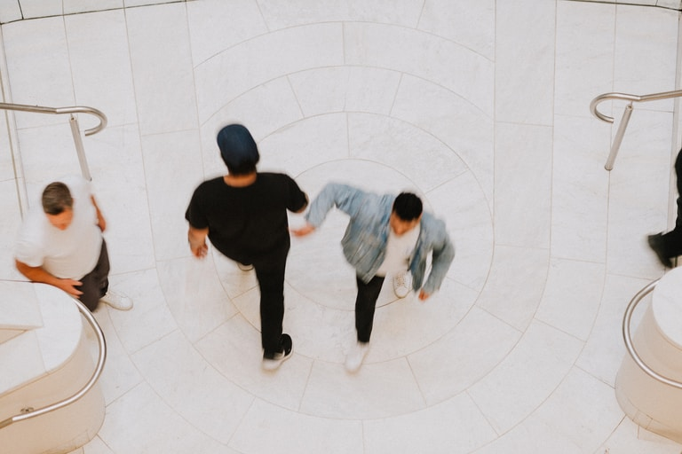
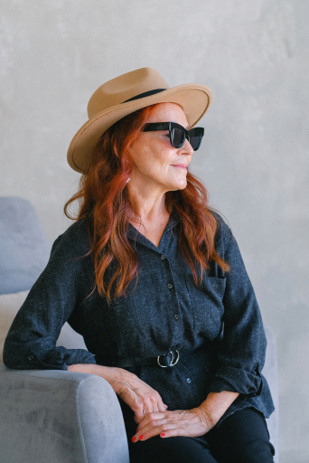
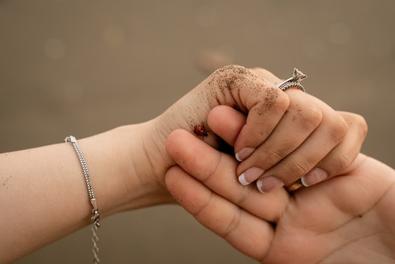
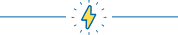
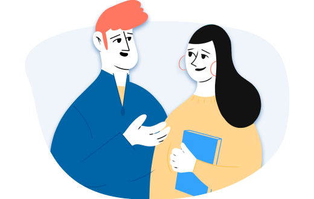
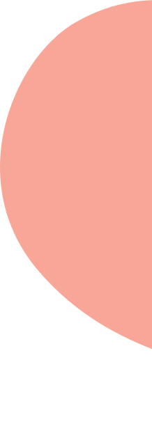
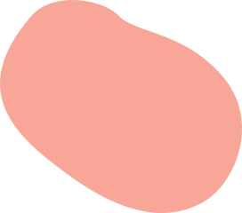

Как не утонуть в тревоге
и управлять своими страхами
Заголовок h3
Один из самых важных навыков, которые может дать работа с психотерапевтом — умение в разных ситуациях по-разному обходиться со своими эмоциями. Снять этот процесс с автопилота и перевести его в поле сознания.
Давайте, к примеру, разберём тревогу. Можно разложить перед собой целую коллекцию доступных реакций и выбрать нужную:
Мы знаем, что нуждаться в помощи и поддержке в трудные периоды жизни абсолютно нормально для любого человека, и стремимся сделать психотерапию безопасной, удобной и доступной каждому
Ана Крымская
Что еще можно делать с тревогой?
- Управлять ей через что-то внешнее: включать музыку, которая создаёт другое настроение, сесть за работу с цифрами, которая быстренько активизирует другие участки мозга, читать блоги, которые вас успокаивают и отвлекают.
- А ещё порой можно разрешить себе тревогу заесть чем-то вкусным. Это, конечно, не самая здоровая стратегия, но в ряде ситуаций можно считать её вполне рабочей. Особенно, когда внутренний ресурс на нуле, а поддерживающее окружение не в доступе.

Чем шире доступный вам репертуар реакций и чем более осознанно вы можете выбирать из него то, что лучше всего подойдёт в каждой конкретной ситуации, тем больше будет ваша устойчивость к стрессу, депрессии, неопределённости, да и к жизни в целом.
Мы знаем, что нуждаться в помощи и поддержке в трудные периоды жизни абсолютно нормально для любого человека, и стремимся сделать психотерапию безопасной, удобной и доступной каждому
Одна из ключевых задач психотерапии как раз и заключается в том, чтобы этот репертуар расширять и обучать человека пользоваться доступными ему реакциями в той последовательности, пропорции и объёме, которые подходят именно ему. Без оглядки на то, «как правильно» или «как у других».

Чем шире доступный вам репертуар реакций и чем более осознанно вы можете выбирать из него то, что лучше всего подойдёт в каждой конкретной ситуации, тем больше будет ваша устойчивость к стрессу, депрессии, неопределённости, да и к жизни в целом.
Что еще можно делать с тревогой?
- Управлять ей через что-то внешнее: включать музыку, которая создаёт другое настроение, сесть за работу с цифрами, читать блоги, которые вас успокаивают и отвлекают.
- А ещё порой можно разрешить себе тревогу заесть чем-то вкусным. Особенно, когда внутренний ресурс на нуле, а поддерживающее окружение не в доступе.
Чем шире доступный вам репертуар реакций и чем более осознанно вы можете выбирать из него то, что лучше всего подойдёт в каждой конкретной ситуации, тем больше будет ваша устойчивость к стрессу, депрессии, неопределённости, да и к жизни в целом.


Одна из ключевых задач психотерапии заключается в том, чтобы расширять репертуар реакций и обучать человека пользоваться ими в той последовательности, пропорции и объёме, которые подходят именно ему.


